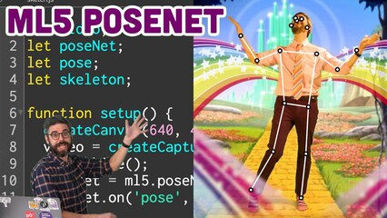

<!DOCTYPE HTML>
<html>
	<head>
		<link rel="shortcut icon" type="image/x-icon" href="images/logo.png" />
		<title>Pose Estimation With PoseNet</title>
		<script src="https://cdn.jsdelivr.net/npm/p5@1.1.4/lib/p5.min.js"></script>
		<script src="https://cdn.jsdelivr.net/npm/p5@1.1.4/lib/addons/p5.sound.min.js"></script>
		<script src="https://unpkg.com/ml5@0.4.2/dist/ml5.min.js"></script>
		<meta charset="utf-8" />
		<meta name="viewport" content="width=device-width, initial-scale=1" />
		<link rel="stylesheet" href="assets/css/main.css" />
	</head>
	<body>
		<footer id="footer">
		<div class="socials">
			<ul class="icons">
				<li><a target="_blank" href="https://github.com/kristina-arezina/posenet-website" class="icon fa-github-square"></a></li>
				<li><a target="_blank" href="https://arezina-kristina23.medium.com/" class="icon fa-medium"></a></li>
				<li><a target="_blank" href="https://www.linkedin.com/in/kristina-arezina-7a0113197/" class="icon fa-linkedin-square"></a></li>
			</ul>
		</div>
		<footer id="footer">
				<section id="banner" src="images/people.jpg" alt="">
					<div class="inner">
						<header class="header">
							<h1>Pose Estimation With PoseNet</h1>
							<p>Live demo of how PoseNet can be used to find the key points of a person’s stance and skeleton in a browser. I have explained how poseNet was used in this demo and linked to some of the resources I used to make this demo.</p>
						</header>
						<a href="#poseNet" class="button big alt scrolly">Go to live demo</a>
					</div>
				</section>

		<!-- Main -->
			<div id="main">

			<!-- One -->
				<section class="wrapper style1">
					<div class="inner">
						<header class="align-center">
							<h2>The Technical Part</h2>
							<p>PoseNet is a pre-trained machine learning model. It allows you to do real-time human pose estimation in the browser with TensorFlow.js.</p>
						</header>
						<!-- 2 Column Video Section -->
							<div class="flex flex-2">
								<div class="video col">
									<div class="image fit">
										
										<div class="arrow">
											<div class="icon fa-play"></div>
										</div>
									</div>
									<p class="caption">
										Click to see a fantastic tutorial video made by The Coding Train that provides a great introduction to poseNet.
									</p>
									<a href="theCodeTrainDemo.html" class="link"><span>Click Me</span></a>
								</div>
								<div class="video col">
									<div class="image fit">
										
									</div>
									<p class="caption">
										Check out these docs to run real-time pose estimation in the browser using TensorFlow.js.
									</p>
									<a href="poseNetDoc.html" class="link"><span>Click Me</span></a>
								</div>
							</div>
					</div>
				</section>
				<div id="poseNet">
					<header class="align-center">
						<h2>Live Demo Of Pose Estimation With PoseNet</h2>
					</header>				
				</div>
			</div>

			

		<!-- Scripts -->
			<script src="assets/js/jquery.min.js"></script>
			<script src="assets/js/jquery.scrolly.min.js"></script>
			<script src="assets/js/skel.min.js"></script>
			<script src="assets/js/util.js"></script>
			<script src="assets/js/main.js"></script>
			<script src="sketch.js"></script>
	</body>
</html>